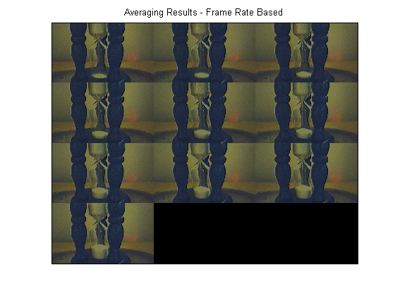
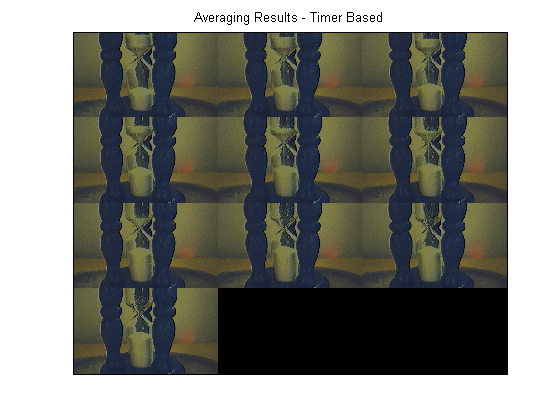

Averaging Images Over Time
For some advanced applications, the acquisition process may require that images be processed as they are acquired, while your processing results are recorded to disk.
Using Image Acquisition Toolbox callbacks, triggering, and logging features, this demonstration illustrates how to accomplish the following task:
The experimental setup consists of an hourglass with white sand trickling down over time. The demonstration uses a callback function, found in the
directory, that averages acquired image frames using Image Processing Toolbox functions.
Overview
Create and configure a video input object for the acquisition.
% Add the callback function used for this demo to the MATLAB path. utilpath = fullfile(matlabroot, 'toolbox', 'imaq', 'imaqdemos', 'html', 'applications', 'averaging'); addpath(utilpath); % Access a device using a 24 bit RGB format. vid = videoinput('winvideo', 1, 'RGB24_320x240');
% Assuming data logging can begin immediately upon START, % an immediate trigger is used. triggerconfig(vid, 'immediate'); % Configure the acquisition to collect 5 frames... framesPerTrigger = 5; set(vid, 'FramesPerTrigger', framesPerTrigger)
% ...and repeat the trigger 9 additional times % (for a total of 10 trigger executions). nAdditionalTrigs = 9; set(vid, 'TriggerRepeat', nAdditionalTrigs)
To control the rate at which frames will be logged, there are 2 options available:
First, a solution using the device's frame rate will be shown, followed by an alternative solution using a timer callback.
Using the frame rate option will provide acquisition results that are most closely aligned with the device's actual video stream rate, whereas using the timer approach provides acquisition results independent of the device's streaming rate.
Frame Rate Based Acquisition (Solution 1)
The device frame rate can only be configured if it is supported by the device. As it is a device specific property, it can be found on the video source object.
% Access the video source selected for acquisition.
src = getselectedsource(vid);% Notice this device provides a FrameRate property.
get(src) General Settings:
Parent = [1x1 videoinput]
Selected = on
SourceName = input1
Tag =
Type = videosource
UserData = []
Device Specific Properties:
BacklightCompensation = on
Brightness = 255
BrightnessMode = auto
Contrast = 127
Exposure = 511
ExposureMode = auto
Focus = 58
FrameRate = 15.1500
Gamma = 0
Iris = 4
Saturation = 108
Sharpness = 127
WhiteBalance = 100
WhiteBalanceMode = auto
% Using the FrameRate property, one can configure the acquisition source % to provide the toolbox 30 frames per second. fps = 30; set(src, 'FrameRate', num2str(fps))
% Since the goal is to acquire 5 frames every 10 seconds, the toolbox % should not acquire any frames until the device provides the 300'th % frame: acqPeriod = 10; frameDelay = fps * acqPeriod
frameDelay = 300
% If the trigger is delayed by this value, the toolbox will not buffer % any frames until the 300'th frame is provided by the device. set(vid, 'TriggerFrameDelay', frameDelay)
% To ensure the acquisition does not come close to timing out, configure % the time out value slightly above the expected acquisition duration. totalTrigs = nAdditionalTrigs + 1; acqDuration = (acqPeriod * totalTrigs) + 3
acqDuration = 103
vid.Timeout = acqDuration;
In order to save processed images to disk, a MATLAB AVIFILE object is used. Each set of acquired frames is averaged using Image Processing Toolbox functions, and then written to disk.
% Create an AVI file and configure it. aviobj = avifile('imaverages.avi'); aviobj.Fps = fps;
% Use the video input object's UserData to store processing information. userdata.average = {}; userdata.avi = aviobj; vid.UserData = userdata; % Configure the video input object to process every 5 acquired frames by % specifying a callback routine that is executed upon every trigger. vid.TriggerFcn = {'util_imaverage', framesPerTrigger};
% Now that the image acquisition and processing configuration is complete, % the acquisition is started. start(vid)
% Wait for the acquisition to complete. This provides the acquisition % time to complete before the object is deleted. wait(vid, acqDuration);
% Verify the averaged frames were saved to the AVI file.
userdata = vid.UserData;
aviobj = userdata.avi;
framesWritten1 = aviobj.TotalFrames
framesWritten1 =
10
% Display the resulting averages of the acquired frames. % Notice the change in the lower chamber of the hourglass over time. imaqmontage(userdata.average); title('Averaging Results - Frame Rate Based');
% Once the video input object is no longer needed, delete % it and clear it from the workspace. delete(vid) clear vid
Timer Based Acquisition (Solution 2)
An alternative solution for this task is to use a TimerFcn. The TimerFcn can be executed every 10 seconds, at which point 5 frames are acquired and averaged. In order to initiate the acquisition at the correct moment, manual triggers are used.
Note, this approach is independent of configuring the device's frame rate.
% Access a device and configure the acquisition. Have % the TimerFcn trigger the acquisition every 10 seconds. vid = videoinput('winvideo', 1, 'RGB24_320x240'); triggerconfig(vid, 'manual'); vid.TimerFcn = @trigger; vid.TimerPeriod = acqPeriod;
% Configure the acquisition to collect 5 frames each time the % device is triggered. Repeat the trigger 9 additional times. set(vid, 'FramesPerTrigger', framesPerTrigger) set(vid, 'TriggerRepeat', nAdditionalTrigs)
% Configure the processing routine and AVI file. vid.TriggerFcn = {'util_imaverage', framesPerTrigger}; aviobj2 = avifile('imaverages2.avi'); aviobj2.Fps = fps; % Use the video input object's UserData to store processing information. userdata2.average = {}; userdata2.avi = aviobj2; vid.UserData = userdata2;
% Start the acquisition.
start(vid);
wait(vid, acqDuration);% Verify the averaged frames were saved to the AVI file.
userdata2 = vid.UserData;
aviobj2 = userdata2.avi;
framesWritten2 = aviobj2.TotalFrames
framesWritten2 =
10
% Display the resulting averages of the acquired frames. % Notice the change in the lower chamber of the hourglass over time. imaqmontage(userdata2.average); title('Averaging Results - Timer Based');
% Once the video input object is no longer needed, delete % it and clear it from the workspace. delete(vid) clear vid
% Restore the MATLAB path.
rmpath(utilpath);